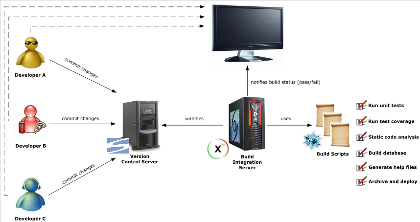

Enfoque metodológico que ordena rigurosamente las etapas del ciclo de vida del software, de tal forma que el inicio de cada etapa debe esperar a la finalización de la inmediatamente anterior.
Etapas:
Análisis de requisitos
Diseño del Sistema
Diseño del Programa
Codificación
Pruebas
Implantación
Mantenimiento
2 Desarrollos ágiles
En auge.
Promueve iteraciones en el desarrollo a lo largo de todo el ciclo de vida del proyecto.
Cada iteración del ciclo de vida incluye: planificación, análisis, diseño, codificación, revisión y documentación.
Una iteración no debe agregar demasiada funcionalidad pues la meta es tener un demo (sin errores) al final de cada iteración.
Al final de cada iteración el equipo vuelve a evaluar las prioridades del proyecto.
Los métodos ágiles enfatizan las comunicaciones cara a cara en vez de la documentación.
Muy ligado con TDD.
3 Control de versiones (I)
Definición
Gestionan los diversos cambios que se realizan sobre el código.
Posibilitan el acceso al histórico de un determinado elemento o un conjunto de ellos, pudiendo normalmente volver a un estado anterior.
Facilitan la administración de las distintas versiones de cada producto desarrollado.
Funcionamiento
Disponen de un repositorio, que contiene el historial de todos los elementos.
Para trabajar, los usuarios se crean una copia local de la versión con la que quieren trabajar (checkout).
Cuando el usuario termina, sube los cambios de nuevo al repositorio (commit)
Ventajas
Control del código a lo largo del tiempo.
4 Control de versiones (II)
Tipos
Centralizados: existe un repositorio centralizado de todo el código, del cual es responsable un único usuario (o conjunto de ellos).
Ejemplo: Subversion
Distribuidos: cada usuario tiene su propio repositorio.
Ejemplo: Git
5 Construcción de proyectos: Ant
Herramienta simple y multi-propósito usada para la realización de tareas mecánicas y repetitivas
Hecha en Java, tiene la ventaja de no depender de las órdenes del shell de cada sistema operativo, sino que se basa en archivos de configuración XML y clases Java para la realización de las distintas tareas, siendo idónea como solución multi-plataforma.
Usada normalmente durante la fase de compilación y construcción de proyectos de software.
6 Construcción de proyectos: Maven
Herramienta de software para la gestión y construcción de proyectos Java.
Es capaz de gestionar dependencias entre proyectos.
Hay plugins para generar el JavaDoc, ejecutar los tests, lanzar métricas, etc.
Está pensado para usarse en red, para la gestión de dependencias y plugins.
El ciclo de vida de un proyecto Maven se divide en metas, de tal forma que para ejecutar cualquier meta, todas las anteriores han debido ser completadas satisfactoriamente.
Las metas del ciclo de vida principal (existen otras) de un proyecto son:
compile
test
package
install
deploy
7 Métricas de código
Definición
Son un conjunto de medidas de software que proporcionan una mejor visión del código que se está desarrollando.
Algunos tipos
Errores potenciales
Reglas de codificación
Número de comentarios
Número de líneas de código (por método, clase, paquete)
Complejidad ciclomática
Duplicidad del código
Cobertura de pruebas del código
Profundidad de las herencias de las clases
Acoplamiento de clases
etc.
8 Herramientas de métricas de código
Herramientas (muchas tienen plugins para eclipse y/o maven)
Checkstyle (convenciones de codificación)
PMD (busca en el código ciertos patrones de error)
Findbugs (realiza análisis estático de código en busca de errores)
JDepend (proporciona métricas de cálidad entre los paquetes de un proyecto en términos de su extensibilidad, reusabilidad, y mantenibilidad.)
JavaNCSS (permite recoger métricas sobre el código fuente, como el número de líneas, paquetes, clases o métodos.)
Cobertura (permite calcular la cantidad de código al que acceden los tests)
Plataformas
Sonar integra todos las anteriores herramientas en una.
9 Ventajas de las métricas de código
Cómo desarrollador:
Aprendes a programar mejor.
Aprendes a detectar errores comunes.
Aprendes las reglas de codificación.
Cuantificas la calidad de tú software.
Cómo docente:
Se pueden pasar métricas al código entregado por los alumnos para corregir prácticas y exámenes automáticamente.
10 Integración Continua
Definición
Consiste en hacer integraciones automáticas de un proyecto lo más a menudo posible para así poder detectar fallos cuanto antes.
Cada cierto tiempo, o cada vez que se hace un commit:
descargarse las fuentes desde el gestor de control de versiones,
compilar el código,
ejecutar los tests
y generar informes.
Los servidores de Integración Continua más conocidos actualmente para Java son Hudson y Jenkins.
11 Esquema Integración Continua

12 Ventajas de la Integración Continua
Los desarrolladores pueden detectar y solucionar problemas de integración de forma continua, evitando el caos de última hora cuando se acercan las fechas de entrega.
Disponibilidad constante de un empaquetado para pruebas, demos o lanzamientos anticipados.
Ejecución inmediata de los tests unitarias.
Monitorización continua de las métricas de calidad del proyecto.